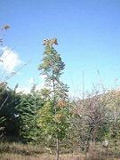
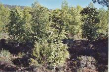
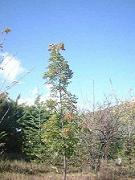
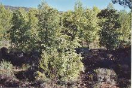
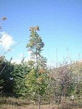
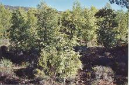

 Les Reboisements à Sainte-Victoire


1°année 3°année 10° année
Le but de l'association n'est pas de se substituer aux institutionnels ni d'essayer de reboiser tout le massif avec des feuillus, mais plutôt d'expérimenter des techniques de reboisement sur quelques parcelles disséminées; et par là même de créer des zones coupe-feu constituées uniquement de feuillus en parallèle aux plantations d'oliviers effectuées par les institutionnels.
Le principe du reboisement
défendu par l'association
Ses conseillers scientifiques et
techniques
Le choix des espèces plantées
La méthode de plantation
La préparation du terrain
Le choix des sites à reboiser
Les reboisements annuels et nos
partenaires
L'entretien des plantations
Le bilan des plantations
Reboisement dans les Calanques Les journées de reboisement à
destination des entreprises
Articles parus dans notre journal
Autres techniques de reboisements